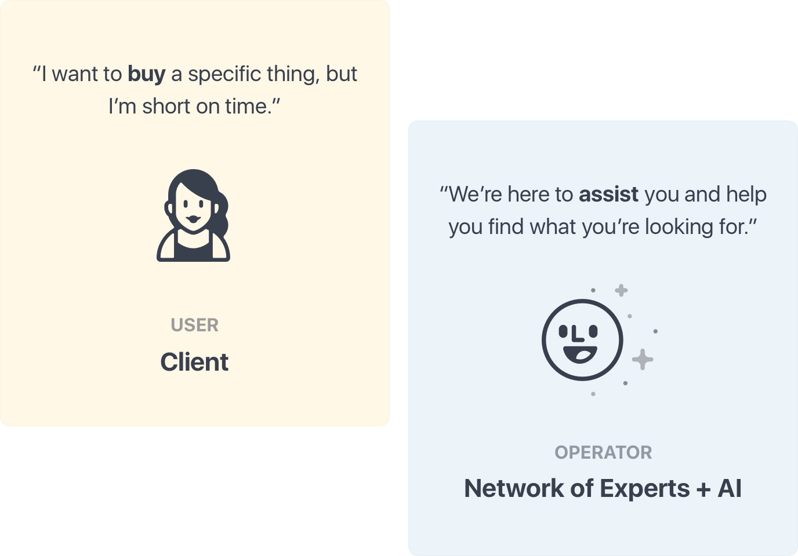
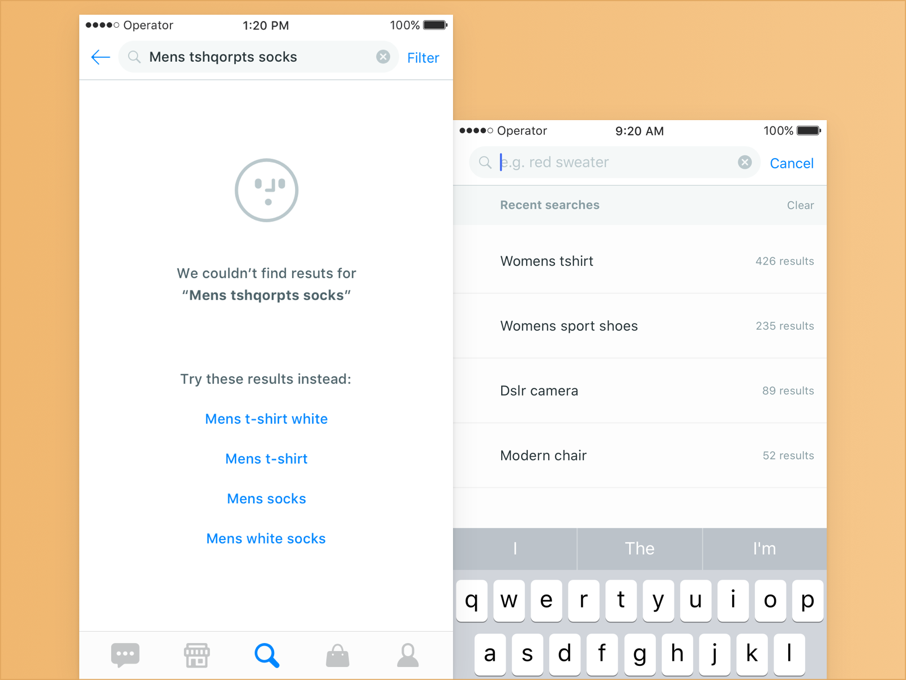
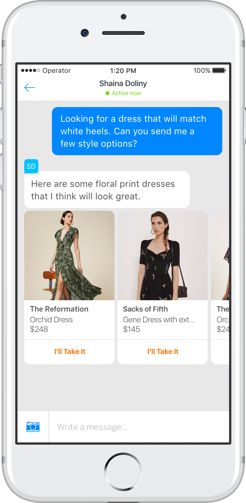
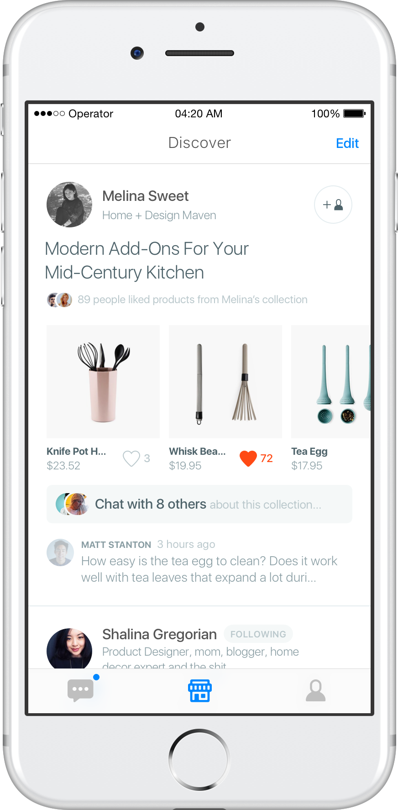
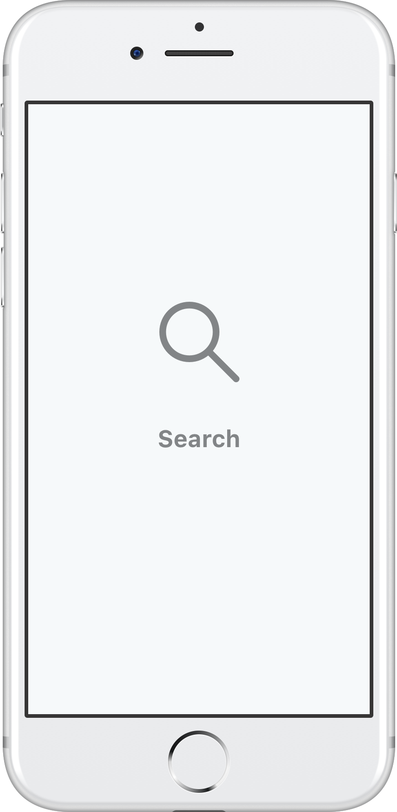
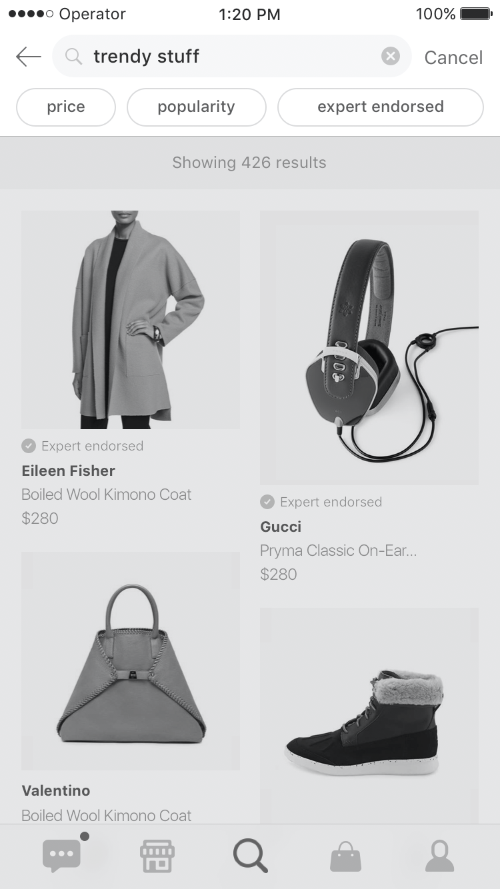
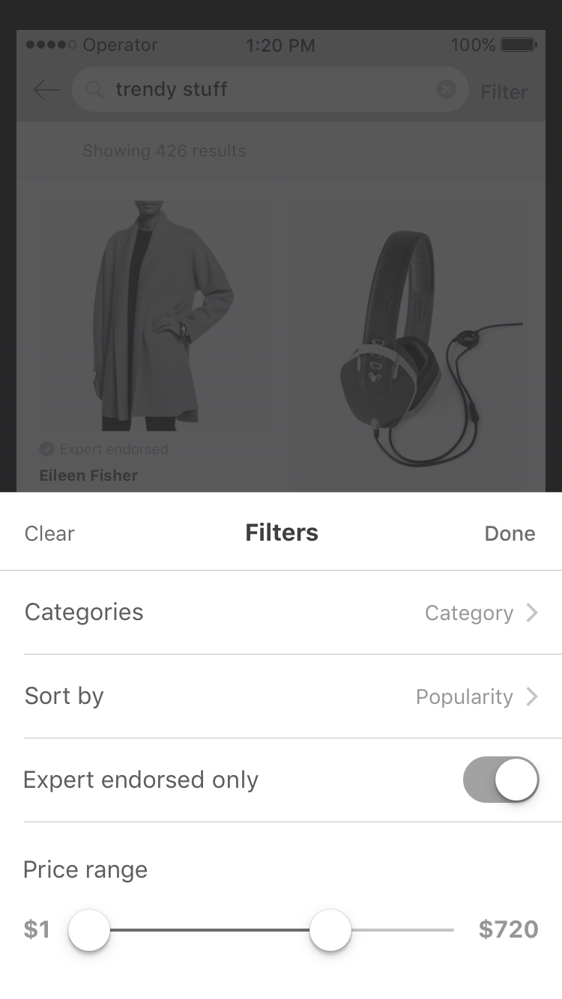
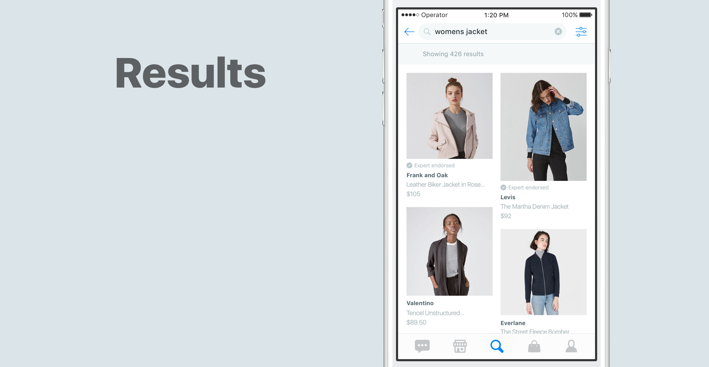
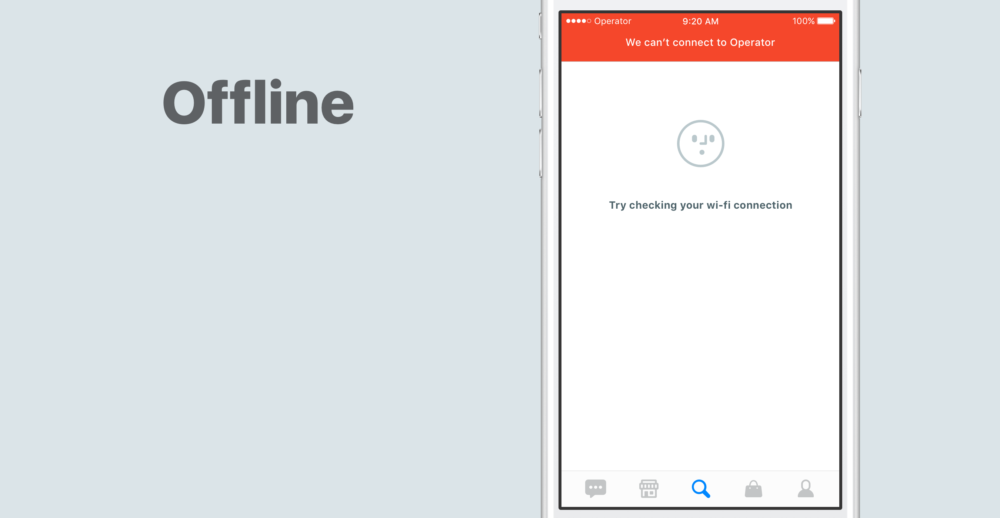
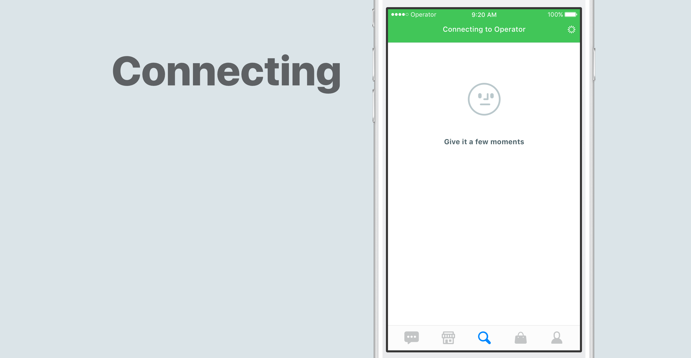

Operator
Building Search at Operator
About Operator
Are you too busy and want to save time shopping? Want to find something specific but don't want to spend hours online looking for that perfect item you want to buy? That's when Operator comes in.

Operator helps you shop faster through network of experts that give you personalized recommendations. This is how requests work →

As a Product Designer at Operator my primary focus was to improve various features across the US app and help with our app launch in China.
The challenge
Why build Search?
Since our launch in China in December 2016 one of the most requested features was search. Keeping in mind how people in China use ecommerce apps, it made a lot of sense.
One piece of feedback we were getting often from our early user research that stood out the most was:
"I want to have search in the app because I can see what the app is about before talking to experts."
Another problem was speed and accessibility. Our experts don't work 24/7 which means that clients can't get experts help from 11pm to 8am. That means we're losing potential sale. Moreover, it takes about 3 minutes for an expert to reply to a client and in some cases those clients might leave and not come back to the app, or come back much later.
The goal of building Search is to allow people to browse through our inventory and give them an opportunity to buy products when they don't want to wait for an expert to reply.
TL;DR
Defining functionality, flow, navigation
While we were defining the functionality of Search, we were asking ourselves questions such as:
- How would Search work? What are the filter mechanisms?
- What content goes inside each item displayed in Search?
- Where should Search live? How do people find it in the app?
- How does Search affect our other two main go-to screens where people find products? How does Search differentiate itself from the other main features of the app?
We had to keep our engineering and time constraints in mind. Therefore our first iteration of Search needed to be feasible, needed to work for our inventory and display relevant product information.
Meeting expectations
To make Search more intuitive I wanted to make sure we that we follow common search interaction patters, such as showing recent searches, smart suggestions (autocomplete), useful input placeholders and filtering mechanism, which I will get to later.

How does Search fit within the rest of the app?
To understand how the Search fits within our app let's take a look at our current features.

Messaging helps clients to shop passively when they want to save time.

Discover gives clients quick glance on individual experts and the products they offer.

Search allows people to view, find and buy products independently.
We were worried that Search can undermine our Messaging service or compete with it, but later on we've found out that it can actually compliment our features. That's the path we wanted to take. We wanted to make sure Search offers unique features.
Iterating on Search filters
Having filters to constrain search results is a crucial feature when it comes to ecommerce apps. After we've identified top search preferences from our feedback groups, we went on to iterate on how to lay them out. Few design critiques later, we've narrowed down to two main options: to have inline filters tab (Yelp style) or to keep filters in a separate filter sheet. Here is how the two compare:

The advantages of inline filter tab is that's easily accessible, but it would be much more challenging to extend inline filters if we add more filter options. Moreover, it takes the precious real estate on the screen.

We've concluded that having separate sheet with filters is a better fit for our specific search filters functionality. Things like Price range and selecting search Category (e.g. Womens shoes vs Mens shoes) seemed to be crammed when placed inside of inline search tab. Moreover, it's a more scalable solution than having inline search tab.
Macro and micro interactions
To further explore Search-filter interaction in Operator app, I've built Framer prototype. One tricky part was displaying the price range in the filter sheet. In earlier iterations each price label (min and max values) was attached to its knob. But it didn't work out because if min and max values are big they collapse when too close to each other. Centering both min and max labels together solved that problem.

Link to Framer prototype and the video
States
I'm striving to design with various screen states in mind so that the experience feels cohesive and consistent throughout the product. Working closely with our developers and figuring out what the different use cases are helped out a ton at this stage.



Going further
After going through a few prototypes and user interviews, we started to roll out the current iteration of Search. So far, we've ended up making a few minor modifications to the UI based on the usability tests test that we've done in-house. For example, Filter icon has changed to "Filter" text as it proved to be more intuitive to people.
Lessons learned
This is our first version of Search that's about to launch live. We're currently rolling it out to users and getting more feedback.
One of the learning pieces that stands out is how important it is to research and learn from similar products and just any good products in general that have implemented mobile search.
Another part I didn't mention is how challenging it is to build search on the technical side. I've learned a lot about covering all kinds of search scenarios and designing with different states in mind.
Lastly, having user-centered design process, meaning having people be involved and providing feedback during all stages of the design was invaluable to our process of building features.